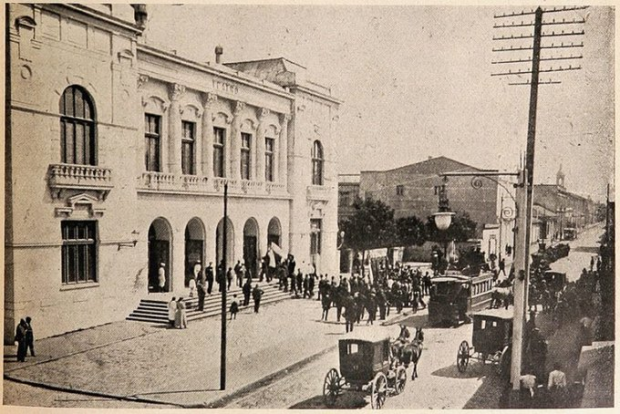
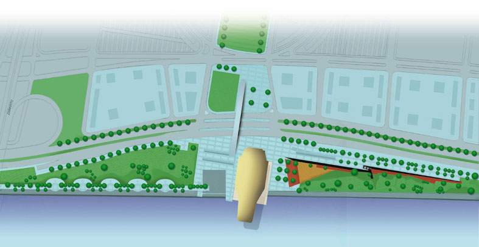

La primera tarea a solucionar para esta incipiente organización de ciudadanos fue dónde construir el nuevo teatro. King me contó que él ya había investigado algo al respecto e, incluso, lo había escrito en una carta al diario El Sur el 11 de julio de 1994:
“La Universidad de Concepción era dueña del Teatro Concepción antiguo, porque la Sociedad Teatro Concepción S.A. se lo había transferido por escritura llamada “de compraventa” del año 1929 que, en verdad, era una donación, pues el precio era simbólico. Y tan así era que contemplaba en la cláusula tercera que, si la universidad dejaba de existir o perdía su carácter de institución particular o local, el teatro pasaría al Club Concepción. Entendía que, aunque la universidad no había perdido su condición de regional o privada, tenía una obligación moral de hacer que el terreno donde estaba el teatro destruido, siguiera usándose para el fin que se le había destinado.
Ya como presidente de la nueva corporación, tuve la oportunidad de conversar con Augusto Parra Muñoz, rector de la Universidad de Concepción, con quien habíamos sido compañeros y amigos en la Escuela de Derecho de esa casa de estudios. Él era algo menor que yo, pero hermano de uno de mis mejores amigos de la época de estudiante, Pedro León.

Antiguo Teatro Concepción Barros Arana esquina Orompello.
Antiguo Teatro Concepción con público.
Augusto Parra.
El rector Parra se manifestó completamente de acuerdo con la idea de construir un nuevo teatro y que apoyaría en lo que fuese posible. Desgraciadamente, existen esos “peros” obstaculizadores y la universidad necesitaba financiamiento. El producto de la venta de ese inmueble les ayudaría mucho y, por si fuese poco, tenían conversaciones para su venta por un buen precio. En todo caso, hubo apoyo de la UdeC con un aporte económico que nos ayudaría a pagar gastos administrativos y con el comodato de una oficina, ubicada en calle Aníbal Pinto 355, tercer piso. Sin embargo, encontrar el inmueble donde construir el edificio se estaba haciendo difícil. Una esperanza desaparecía.
Nuestro siguiente paso, más protocolar, fue visitar al Intendente Regional, Martin Zilic Hrepic. Han pasado los años y no recuerdo bien quiénes estuvimos en esa reunión con el intendente. Creo que fuimos con Carlos Von Plessing, Tito Ansaldo y Richard Henríquez. Él estaba empeñado en lograr que la ciudad no le diera la espalda a su río Bío Bío y llegara, verdaderamente, hasta las orillas de él. Para esto, se estaba diseñando un proyecto urbano para cambiar ese lugar totalmente perdido e irregular, con casas precarias e inseguras para sus habitantes, sujetos al temor de una crecida del río en épocas de fuertes lluvias. En fin, ya estaba en conocimiento de nuestros afanes y, sin que nosotros lo imaginásemos, nos propuso construir el teatro a la orilla del río Bío Bío, cediendo un terreno sin costo para ello. De nuevo, nacía una esperanza cuando las cosas parecían imposibles.
Martin Zilic.
Luego de la proposición del Intendente Martin Zilic, se reunieron los arquitectos Antonio Celis, Bernardo Trumper, Werner Stehr y Enrique Amstrong. Creyendo que la remodelación de la Costanera de la Rivera Norte sería una realidad, aceptaron el lugar como el mejor posible. Llevamos la propuesta al directorio y las opiniones estuvieron bien divididas, desde insistir con la Universidad de Concepción a buscar un terreno entre las comunas de Concepción, Talcahuano y Hualpén. La principal objeción a la idea de Zilic era la supuesta imposibilidad de mudar a cientos de familias que se habían instalado en la orilla del río y, si se lograba, pasarían muchos años para eso. Guardamos bajo 7 llaves las observaciones pesimistas de algunos directores. Hoy podemos ver el resultado: desde la distancia temporal, tantos años después, cabe decir: Gracias, Martin”.
Terreno destinado para el Teatro Pencopolitano en el proyecto Rivera Norte de Concepción.
ARQUITECTOS PARA EL TEATRO
Luego, quise saber cómo en este listado de hechos, algunos increíbles, se había incorporado el diseño del afamado arquitecto chileno Borja Huidobro, quien ni siquiera vivía en el país, sino en Francia. Y en qué se habían basado para determinar los requisitos técnicos que incluían 2 salas:
“A estas alturas, cabe señalar que sí estábamos conscientes que sin un proyecto, incluso, un boceto de cómo podría ser el teatro, sería difícil entusiasmar a la opinión pública. Y había que mantener el entusiasmo producido con la presentación de Pavarotti.
Bernardo Trumper, Eugenio Dittborn y Luis Alberto Heiremans en el Aeropuerto Los Cerrillos, 1964.
Organisation Internationale des Scénographes, Techniciens et Architectes de Théâtre (OISTAT).
Por casualidad, otra vez, nos pusimos en contacto con Bernardo Trumper. Él era un arquitecto chileno que se había especializado en escenografía en la Universidad de Yale. Incluso, tuvo el cargo de vicepresidente de la de l' Organisation Internationale des Scénographes, Techniciens et Architectes de Théâtre (OISTAT), organización mundial afiliada a la UNESCO, destinada a promover la formación, el intercambio de ideas e innovaciones y la colaboración entre los profesionales de las artes espaciales y visuales del teatro. En 1991, fundó el Centro Chileno de Escenógrafos, Arquitectos y Técnicos Teatrales de Chile, dependiente de la OISTAT.
Trumper estaba en Chile por una enfermedad que le impedía seguir con su trabajo en Europa. Se entusiasmó con la idea de estudiar las características técnicas que debería tener un nuevo teatro en una ciudad como Concepción. Nos dijo que: “No puede ser un edificio más. Debe ser un acontecimiento arquitectónico excepcional que exprese la clara decisión de darle a las artes de la representación una nueva dimensión, conforme a los objetivos artísticos que se pretenden para la ciudad”.

Roberto Benavente, arquitecto.
No pasó mucho tiempo para tener noticias concretas de su avance. Su socio, el arquitecto Roberto Benarvente, nos trajo planos y un boceto de lo que sería el anteproyecto. Nos reunimos en nuestra oficina de la calle Aníbal Pinto para conocer estos planos del exterior del recinto con cortes de cada uno de sus pisos. A todos nos sorprendió, estaba muy fuera de lo que acostumbrábamos a ver como teatro. Pero reconocimos que, siendo algo muy diferente, sería hermoso e impactante. Dirigía la reunión el encargado del tema Proyecto Teatro, Antonio Celis, quien hacía las preguntas del caso. También como arquitectos intervenían Werner Stehr y Enrique Amstrong, sin perjuicio de las preguntas que podíamos hacer el resto de los presentes. El Directorio aceptó lo hecho y dio su venia para seguir con este diseño.
En nuestra gestión, siempre se buscaba el apoyo diverso de quienes pudiesen ayudar en la concreción del teatro. Con este propósito, un par de meses después de la reunión con Benavente, un encuentro en particular, tendría un efecto futuro que nadie imaginó en su momento. Aprovechando que el senador Sebastián Piñera estaba en Concepción, lo invitamos a nuestra sede para conocer el proyecto, buscando la asesoría y recursos de su fundación. Lo pasé a buscar al Hotel Alborada para dirigirnos, caminando, a la oficina de nuestra corporación, aprovechando el momento para conversar algo más del proyecto. En ella, nos esperaba Antonio Celis quien, como correspondía, fue el encargado de mostrar y explicar los planos, que tenía colgados en una pared. Antonio comenzó explicando desde el exterior, de cómo se internaba en el río, que su techo tendría una iluminación por el sistema patentado por Roberto Benavente y lo de las salas. Lo hacía de pie, indicando los lugares de los planos con un puntero. Mientras eso ocurría, Sebastián Piñera parecía preocupado por cualquier otra cosa, menos del relato del arquitecto, de hecho, ni miraba lo que le mostraba Antonio. Yo inquieto, rogaba que Antonio no se diera cuenta de la no atención que le ponía su público unipersonal. Luego, para mi sorpresa. el que creía no estaba atento, el distraído senador, el de los pensamientos en otra cosa, hizo un resumen de todo lo explicado por Antonio, lo encontró excelente y nos ofreció la ayuda de la Fundación Futuro si lo necesitábamos. Esta reunión con el Senador Piñera fue de una importancia no imaginada, que en su momento explicaremos. Quizás sin la explicación de Antonio al senador Piñera, el teatro no hubiera existido.
BORJA EN LA CASA DEL ARTE
El 23 de agosto de 1997, en La Casa del Arte de la Universidad de Concepción, el propio Borja Huidobro hizo una presentación de su proyecto ante autoridades de la Región; socios y directores de la Corporación Teatro Pencopolitano, arquitectos, estudiantes de arquitectura y muchas personas ya interesadas en el proyecto del teatro que habría de cambiar el alma colectiva del Gran Concepción y de la Región. Entre los presentes, podemos nombrar al Intendente Martin Zilic; el senador Eugenio Cantuarias; Ariel Ulloa, alcalde de Concepción; Roberto Goycoolea, rector de la Universidad del Biobío; Augusto Parra, rector de la Universidad de Concepción. También, desde luego, estaban todos los medios de comunicación.
Borja Huidobro, arquitecto.
Borja presentó los planos y la maqueta hecha al efecto. Cabe decir, que los arquitectos Huidobro y Benavente nunca cobraron nada por su proyecto, incluso ellos mismos financiaron sus viajes a Concepción. Lo único que se les pagó, fue la maqueta hecha en Francia, para lo cual la Ilustre Municipalidad de Concepción aportó los fondos. Los asistentes, sin excepción, aceptaron entusiasmados lo propuesto para el futuro teatro. Borja fue muy aplaudido. Y muchos hicieron comentarios aprobatorios. Desde ese momento, el proyecto tomó vuelo. Los socios aumentaron, superaron los dos mil quinientos, la mitad estudiantes. Ya nada evitaría construir un teatro para Concepción.